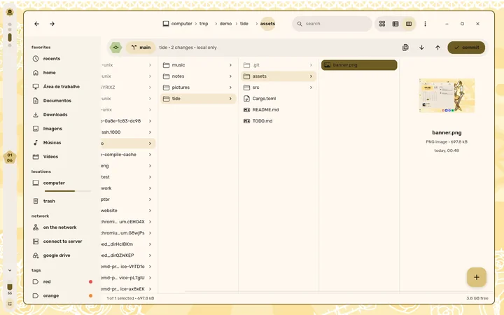
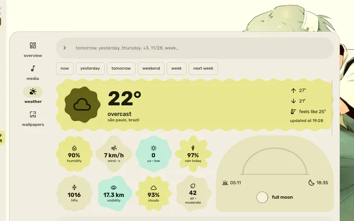
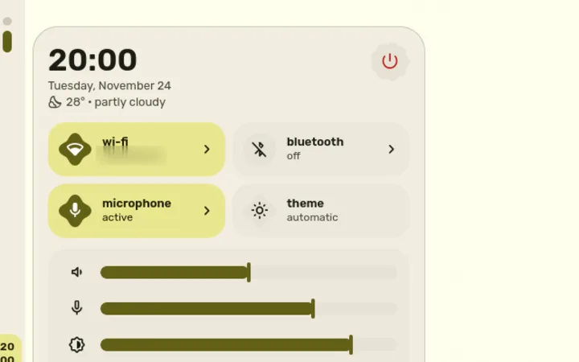
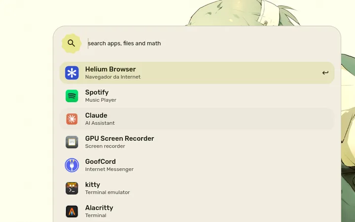

octopus
a cozy material 3 shell for niri. a minimal vertical bar on waybar, and everything bigger in a companion written in rust + gtk4: a dash, a control center, desktop widgets, a file manager and reminders, all in your wallpaper's colors.

new in octopus
a file manager of its own, reminders you type in the spotlight, and a shell that gets out of the way.

octopus files
a file manager after the finder: icons, list and columns, quick look, tags, tabs. it clones a repository, commits and pushes, and sends files to your phone with localsend.
reminders
type !10 min tea or !alarm 6:45 in the spotlight. a toast rings on time; an alarm keeps ringing until you answer.
control center, your way
every section, tile and slider can go or move. a caffeine tile keeps the screen awake.
visibility_offwidgets that step aside
a widget under a window fades out and stops updating; with all of them covered, the layer goes away.
what's inside
opaque, tonal surfaces in m3 shapes. colors from the wallpaper. light enough to idle around 45 mb.
 dashboard
dashboard
dash
a navigation rail, an analog clock, the calendar, the music with its lyrics, the notifications, the weather and a wallpaper picker.

partly_cloudy_dayweather
metrics in m3 shapes, the sun's arc and the moon, hour by hour, and any day from a week back to two ahead.
 widgets
widgets
desktop widgets
under the windows: the weather, your github contributions, a clock, the music, a calendar. right-click the desktop to arrange them.

tunecontrol center
wi-fi, bluetooth, sound, brightness, media and notifications, in one place, in the order you choose.

searchspotlight
apps and their actions, a calculator, files behind /, reminders behind !, power behind >.
 lock
lock
lock screen
m3 shapes that turn and change at every key, the lyric being sung, the weather.
it wears your wallpaper
pick a wallpaper and matugen repaints everything: the bar, the panels, rofi, fuzzel and the rest of your system. light, dark, or whatever the picture asks for.
how the colors workinstall
on arch (or anything with these packages), the repo lives in ~/.config/octopus itself. the installer asks before the optional parts, like octopus files.
git clone https://github.com/pxotitas/octopus ~/.config/octopus
~/.config/octopus/install.shthen, at the end of ~/.config/niri/config.kdl:
include "~/.config/octopus/niri.kdl"dependencies
pam waybar matugen matuwall awww cliphist wl-clipboard wtype playerctl cava brightnessctl networkmanager bluez-utils libpulse python python-dateutil unicode-emoji unicode-cldr fd gcc rofi gtk3 gtk4 gtk4-layer-shell ttf-material-symbols-variable rust
optional, for octopus files: git github-cli avahi gvfs ffmpegthumbnailer unzip zip rclone
next: the shortcuts and what you can change.